Ski resorts
80 resorts in 8 countries. Compare the numbers the operators publish, filter by country or who the mountain suits, and open the resort guide for hotels and the full picture.
All resorts
| Ischgl | Austria | 239 km | 46 | 2,872 m | 26 November 2026 to 2 May 2027 | |
|---|---|---|---|---|---|---|
| Kitzbühel | Austria | 233 km | 2,000 m | Open now | ||
| Lech Zürs | Austria | 301 km | 2,811 m | |||
| Mayrhofen | Austria | 142 km | 61 | 4 December 2026 to 11 April 2027 | ||
| Obergurgl | Austria | 112 km | 25 | 3,030 m | 19 November 2026 to 18 April 2027 | |
| Saalbach-Hinterglemm | Austria | 270 km | 27 November 2026 to 4 April 2027 | |||
| Schladming | Austria | 123 km | Main season 19 December 2026 to 26 March 2027 | |||
| St. Anton am Arlberg | Austria | 301 km | 2,811 m | |||
| Sölden | Austria | 147.2 km | 31 | 3,340 m | Open now | |
| Zell am See | Austria | 77 km | 27 November 2026 to 4 April 2027 | |||
| Banff | Canada | 3 | 2,710 m | |||
| Blue Mountain | Canada | 43 | ||||
| Fernie | Canada | 145 | 2,134 m | Early December to mid-April | ||
| Golden | Canada | 2,505 m | ||||
| Kelowna | Canada | 119 | 17 | 2,319 m | Open now | |
| Lake Louise | Canada | 171 | 13 | 2,637 m | Open now | |
| Mont-Tremblant | Canada | 103 | 875 m | 26 November 2026 to 18 April 2027 | ||
| Revelstoke | Canada | 75 | 4 | 2,340 m | ||
| Sun Peaks | Canada | 144 | 13 | 2,152 m | 21 November 2026 to 4 April 2027 | |
| Whistler | Canada | 200 | 37 | 2,284 m | ||
| Alpe d'Huez | France | 250 km | 3,330 m | 5 December 2026 to 25 April 2027 | ||
| Chamonix | France | 98 km | 2,800 m | 28 November 2026 to 18 April 2027 | ||
| Courchevel | France | 600 km | 84 | 5 December 2026 to 18 April 2027 | ||
| La Plagne | France | 225 km | 3,080 m | 12 December 2026 to 24 April 2027 | ||
| Les Arcs | France | 200 km | 3,226 m | 12 December 2026 to 24 April 2027 | ||
| Megève | France | 235 | 29 | 2,350 m | ||
| Méribel | France | 600 km | 84 | 5 December 2026 to 18 April 2027 | ||
| Tignes | France | 300 km | 71 | 3,456 m | 12 December 2026 to 23 April 2027 | |
| Val Thorens | France | 2,300 m | 5 December 2026 to 18 April 2027 | |||
| Val d'Isère | France | 300 km | 71 | 3,400 m | 28 November 2026 to 2 May 2027 | |
| Alta Badia | Italy | 130 km | 54 | 2,800 m | 4 December 2026 to 4 April 2027 | |
| Bormio | Italy | 18 | 15 | 3,017 m | 4 December 2026 to 11 April 2027 | |
| Cervinia | Italy | 103 km | 19 | 3,480 m | ||
| Cortina d'Ampezzo | Italy | 101 | 26 | 3,244 m | ||
| Courmayeur | Italy | 42 km | 18 | 2,755 m | From 28 November 2026 | |
| Kronplatz | Italy | 120 km | 31 | 2,275 m | 28 November 2026 to 11 April 2027 | |
| Livigno | Italy | 115 km | 28 November 2026 to 2 May 2027 | |||
| Madonna di Campiglio | Italy | 157 km | 59 | 2,500 m | ||
| Sestriere | Italy | 85 | 20 | 2,800 m | ||
| Val Gardena | Italy | 129 | 79 | 4 December 2026 to 4 April 2027 | ||
| Beitostølen | Norway | |||||
| Geilo | Norway | 46 | 20 | Open now | ||
| Hafjell | Norway | 50 km | 18 | 1,050 m | ||
| Hemsedal | Norway | 47 | 22 | 1,450 m | ||
| Kvitfjell | Norway | 36 | 14 | 1,039 m | ||
| Myrkdalen | Norway | 22 | 9 | |||
| Narvik | Norway | 22 | First winter snowfall to spring skiing in May, with the main season from early February | |||
| Norefjell | Norway | 30 | 15 | |||
| Oppdal | Norway | 30 | 15 | 1,330 m | ||
| Trysil | Norway | 71 | 41 | 4 December 2026 to 18 April 2027 | ||
| Björnrike | Sweden | 16 | 15 | 18 December 2026 to 11 April 2027 | ||
| Branäs | Sweden | 36 | 32 | |||
| Funäsdalen | Sweden | 153 | ||||
| Hemavan | Sweden | 36 | 9 | |||
| Idre | Sweden | 41 | 19 December 2026 to 4 April 2027 | |||
| Riksgränsen | Sweden | 17 | 6 | 18 February to 23 May 2027 | ||
| Romme Alpin | Sweden | 34 | 14 | |||
| Sälen | Sweden | 101 | 105 | 4 December 2026 to 18 April 2027 | ||
| Vemdalen | Sweden | 62 | 44 | 27 November 2026 to 18 April 2027 | ||
| Åre | Sweden | 91 | 47 | 1,420 m | 11 December 2026 to 2 May 2027 | |
| Arosa Lenzerheide | Switzerland | 225 km | 43 | 2,865 m | ||
| Crans-Montana | Switzerland | 140 km | 3,000 m | |||
| Davos | Switzerland | 253 km | 2,844 m | |||
| Engelberg | Switzerland | 82 km | 3,000 m | Open now | ||
| Grindelwald | Switzerland | 211 km | 21 November 2026 to 25 April 2027 | |||
| Laax | Switzerland | 216 km | 30 | 3,018 m | From 28 November 2026, daily from 5 December | |
| Saas-Fee | Switzerland | 150 km | 3,600 m | Open now | ||
| St. Moritz | Switzerland | 155 km | 24 | 3,057 m | From 27 November 2026 | |
| Verbier | Switzerland | 106 km | 33 | 3,330 m | ||
| Zermatt | Switzerland | 360 km | 52 | 3,883 m | Open now | |
| Aspen | United States | 98 | 20 | 3,420 m | Snowmass opens 26 November 2026 and closes 11 April 2027 | |
| Big Sky | United States | 320 | 40 | 3,400 m | Opening 25 November | |
| Breckenridge | United States | 187 | 35 | 3,960 m | ||
| Jackson | United States | 131 | 16 | 3,185 m | Opens 27 November 2026; closing date to be determined | |
| Killington | United States | 155 | 21 | 1,290 m | ||
| Palisades Tahoe | United States | 288 | 39 | 2,760 m | ||
| Park City | United States | 330 | 41 | 3,056 m | Typically early December to mid-April | |
| Steamboat Springs | United States | 181 | 23 | 3,220 m | ||
| Telluride | United States | 149 | 17 | 4,060 m | ||
| Vail | United States | 278 | 32 | 3,527 m |
Austria 10
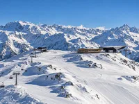
Ischgl
Opens 26 November 2026 to 2 May 2027
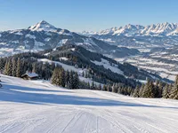
Kitzbühel
Open now 6 November 2026 to 4 April 2027
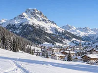
Lech Zürs
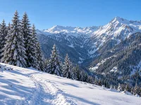
Mayrhofen
Opens 4 December 2026 to 11 April 2027
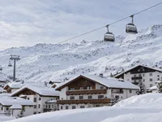
Obergurgl
Opens 19 November 2026 to 18 April 2027
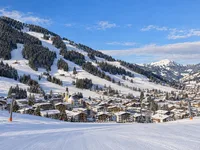
Saalbach-Hinterglemm
Opens 27 November 2026 to 4 April 2027
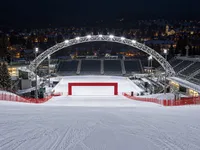
Schladming
Opens Main season 19 December 2026 to 26 March 2027
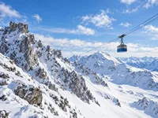
St. Anton am Arlberg
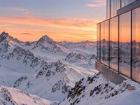
Sölden
Open now 9 October 2026 to 2 May 2027
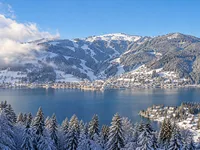
Zell am See
Opens 27 November 2026 to 4 April 2027
Canada 10
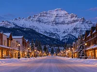
Banff
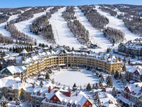
Blue Mountain
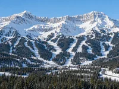
Fernie
Opens Early December to mid-April
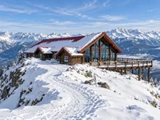
Golden
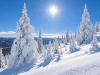
Kelowna
Open now Late November to mid-April
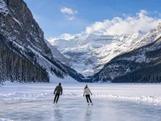
Lake Louise
Open now 6 November 2026 to 2 May 2027
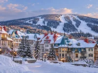
Mont-Tremblant
Opens 26 November 2026 to 18 April 2027
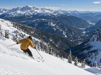
Revelstoke
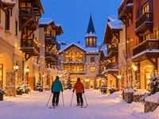
Sun Peaks
Opens 21 November 2026 to 4 April 2027
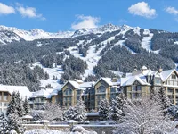
Whistler
France 10
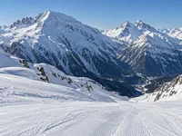
Alpe d'Huez
Opens 5 December 2026 to 25 April 2027
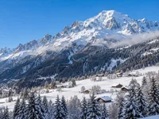
Chamonix
Opens 28 November 2026 to 18 April 2027
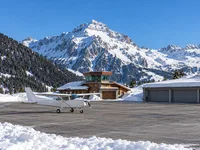
Courchevel
Opens 5 December 2026 to 18 April 2027
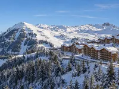
La Plagne
Opens 12 December 2026 to 24 April 2027
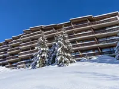
Les Arcs
Opens 12 December 2026 to 24 April 2027
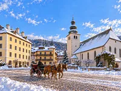
Megève
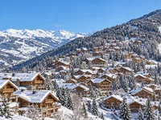
Méribel
Opens 5 December 2026 to 18 April 2027
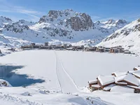
Tignes
Opens 12 December 2026 to 23 April 2027
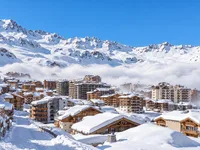
Val Thorens
Opens 5 December 2026 to 18 April 2027
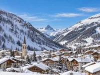
Val d'Isère
Opens 28 November 2026 to 2 May 2027
Italy 10
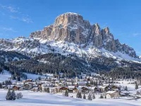
Alta Badia
Opens 4 December 2026 to 4 April 2027
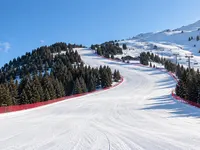
Bormio
Opens 4 December 2026 to 11 April 2027
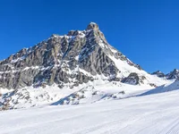
Cervinia
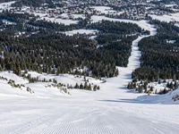
Cortina d'Ampezzo
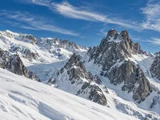
Courmayeur
Opens From 28 November 2026
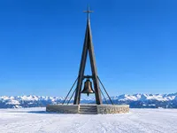
Kronplatz
Opens 28 November 2026 to 11 April 2027
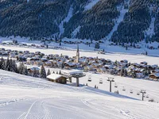
Livigno
Opens 28 November 2026 to 2 May 2027
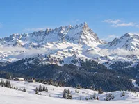
Madonna di Campiglio
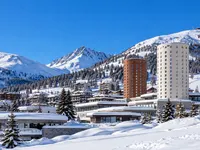
Sestriere
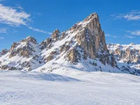
Val Gardena
Opens 4 December 2026 to 4 April 2027
Norway 10
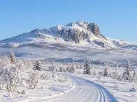
Beitostølen
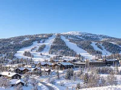
Geilo
Open now November to April
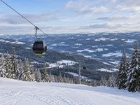
Hafjell
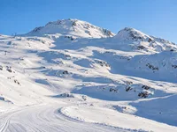
Hemsedal
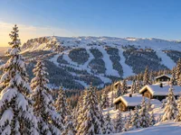
Kvitfjell
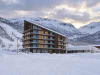
Myrkdalen
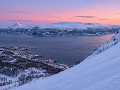
Narvik
Opens First winter snowfall to spring skiing in May, with the main season from early February
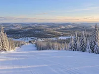
Norefjell
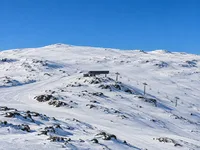
Oppdal
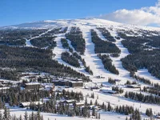
Trysil
Opens 4 December 2026 to 18 April 2027
Sweden 10
Björnrike
Opens 18 December 2026 to 11 April 2027
Branäs
Funäsdalen
Hemavan
Idre
Opens 19 December 2026 to 4 April 2027
Riksgränsen
Opens 18 February to 23 May 2027
Romme Alpin
Sälen
Opens 4 December 2026 to 18 April 2027
Vemdalen
Opens 27 November 2026 to 18 April 2027
Åre
Opens 11 December 2026 to 2 May 2027
Switzerland 10
Arosa Lenzerheide
Crans-Montana
Davos
Engelberg
Open now 29 October 2026 to 2 May 2027
Grindelwald
Opens 21 November 2026 to 25 April 2027
Laax
Opens From 28 November 2026, daily from 5 December
Saas-Fee
Open now 31 October 2026 to 18 April 2027
St. Moritz
Opens From 27 November 2026
Verbier
Zermatt
Open now 1 November 2026 to 2 May 2027
United States 10
Aspen
Opens Snowmass opens 26 November 2026 and closes 11 April 2027
Big Sky
Opens Opening 25 November
Breckenridge
Jackson
Opens Opens 27 November 2026; closing date to be determined
Killington
Palisades Tahoe
Park City
Opens Typically early December to mid-April
Steamboat Springs
Telluride
Vail
No destinations match these filters.
Facts about skiing
How Europe grades a piste
Blue is easy, red is intermediate and black is expert in every European country; France, Spain, Poland, Bulgaria and the UK add green for beginner runs, and some areas mark harder or ungroomed routes orange or yellow. Wikipedia: Piste
How North America grades a trail
North America, Australia and New Zealand use colour and shape: a green circle is the easiest, a blue square intermediate, a black diamond advanced and a double black diamond the most difficult. Wikipedia: Piste
Grades are relative, not absolute
A resort rates each trail only against its own other trails, so a red in one resort can ski like a black in another. Compare pistes within a resort, and use lifts, top elevation and season to compare resorts. Wikipedia: Piste
What the numbers in the table mean
Pistes (km) is the marked, groomed run length the operator publishes. Lifts is the number of lifts in the operator’s own count. Top (m) is the highest lift-served point. Each figure links to the resort guide, where its source sits.
European scale (blue · red · black)
Alpe d'Huez, Alta Badia, Arosa Lenzerheide, Beitostølen, Björnrike, Bormio, Branäs, Cervinia, Chamonix, Cortina d'Ampezzo, Courchevel, Courmayeur, Crans-Montana, Davos, Engelberg, Funäsdalen, Geilo, Grindelwald, Hafjell, Hemavan, Hemsedal, Idre, Ischgl, Kitzbühel, Kronplatz, Kvitfjell, La Plagne, Laax, Lech Zürs, Les Arcs, Livigno, Madonna di Campiglio, Mayrhofen, Megève, Myrkdalen, Méribel, Narvik, Norefjell, Obergurgl, Oppdal, Riksgränsen, Romme Alpin, Saalbach-Hinterglemm, Saas-Fee, Schladming, Sestriere, St. Anton am Arlberg, St. Moritz, Sälen, Sölden, Tignes, Trysil, Val Gardena, Val Thorens, Val d'Isère, Vemdalen, Verbier, Zell am See, Zermatt, Åre
North American scale (green · blue · black · double black)
Aspen, Banff, Big Sky, Blue Mountain, Breckenridge, Fernie, Golden, Jackson, Kelowna, Killington, Lake Louise, Mont-Tremblant, Palisades Tahoe, Park City, Revelstoke, Steamboat Springs, Sun Peaks, Telluride, Vail, Whistler
Season dates as the operators publish them
| Resort | Country | Season |
|---|---|---|
| Ischgl | Austria | 26 November 2026 to 2 May 2027 |
| Kitzbühel | Austria | 6 November 2026 to 4 April 2027 |
| Mayrhofen | Austria | 4 December 2026 to 11 April 2027 |
| Obergurgl | Austria | 19 November 2026 to 18 April 2027 |
| Saalbach-Hinterglemm | Austria | 27 November 2026 to 4 April 2027 |
| Schladming | Austria | Main season 19 December 2026 to 26 March 2027 |
| Sölden | Austria | 9 October 2026 to 2 May 2027 |
| Zell am See | Austria | 27 November 2026 to 4 April 2027 |
| Fernie | Canada | Early December to mid-April |
| Kelowna | Canada | Late November to mid-April |
| Lake Louise | Canada | 6 November 2026 to 2 May 2027 |
| Mont-Tremblant | Canada | 26 November 2026 to 18 April 2027 |
| Sun Peaks | Canada | 21 November 2026 to 4 April 2027 |
| Alpe d'Huez | France | 5 December 2026 to 25 April 2027 |
| Chamonix | France | 28 November 2026 to 18 April 2027 |
| Courchevel | France | 5 December 2026 to 18 April 2027 |
| La Plagne | France | 12 December 2026 to 24 April 2027 |
| Les Arcs | France | 12 December 2026 to 24 April 2027 |
| Méribel | France | 5 December 2026 to 18 April 2027 |
| Tignes | France | 12 December 2026 to 23 April 2027 |
| Val Thorens | France | 5 December 2026 to 18 April 2027 |
| Val d'Isère | France | 28 November 2026 to 2 May 2027 |
| Alta Badia | Italy | 4 December 2026 to 4 April 2027 |
| Bormio | Italy | 4 December 2026 to 11 April 2027 |
| Courmayeur | Italy | From 28 November 2026 |
| Kronplatz | Italy | 28 November 2026 to 11 April 2027 |
| Livigno | Italy | 28 November 2026 to 2 May 2027 |
| Val Gardena | Italy | 4 December 2026 to 4 April 2027 |
| Geilo | Norway | November to April |
| Narvik | Norway | First winter snowfall to spring skiing in May, with the main season from early February |
| Trysil | Norway | 4 December 2026 to 18 April 2027 |
| Björnrike | Sweden | 18 December 2026 to 11 April 2027 |
| Idre | Sweden | 19 December 2026 to 4 April 2027 |
| Riksgränsen | Sweden | 18 February to 23 May 2027 |
| Sälen | Sweden | 4 December 2026 to 18 April 2027 |
| Vemdalen | Sweden | 27 November 2026 to 18 April 2027 |
| Åre | Sweden | 11 December 2026 to 2 May 2027 |
| Engelberg | Switzerland | 29 October 2026 to 2 May 2027 |
| Grindelwald | Switzerland | 21 November 2026 to 25 April 2027 |
| Laax | Switzerland | From 28 November 2026, daily from 5 December |
| Saas-Fee | Switzerland | 31 October 2026 to 18 April 2027 |
| St. Moritz | Switzerland | From 27 November 2026 |
| Zermatt | Switzerland | 1 November 2026 to 2 May 2027 |
| Aspen | United States | Snowmass opens 26 November 2026 and closes 11 April 2027 |
| Big Sky | United States | Opening 25 November |
| Jackson | United States | Opens 27 November 2026; closing date to be determined |
| Park City | United States | Typically early December to mid-April |
Dates from each resort operator; the source link sits on the resort guide. Resorts without a published date are left out.
Alpine skiing events
World Cup weekends and championship races on the OneSliders calendar, each linked to its resort.
1 February 2030 - 17 February 2030 · French Alps, France